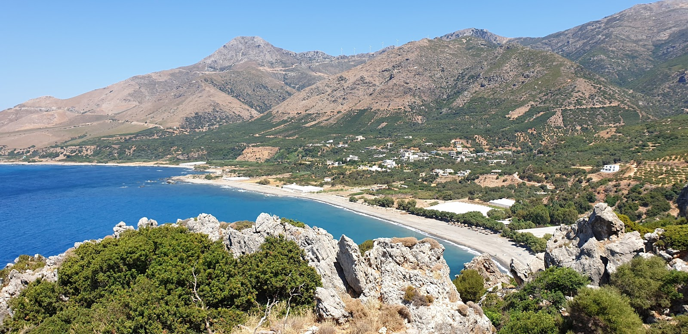
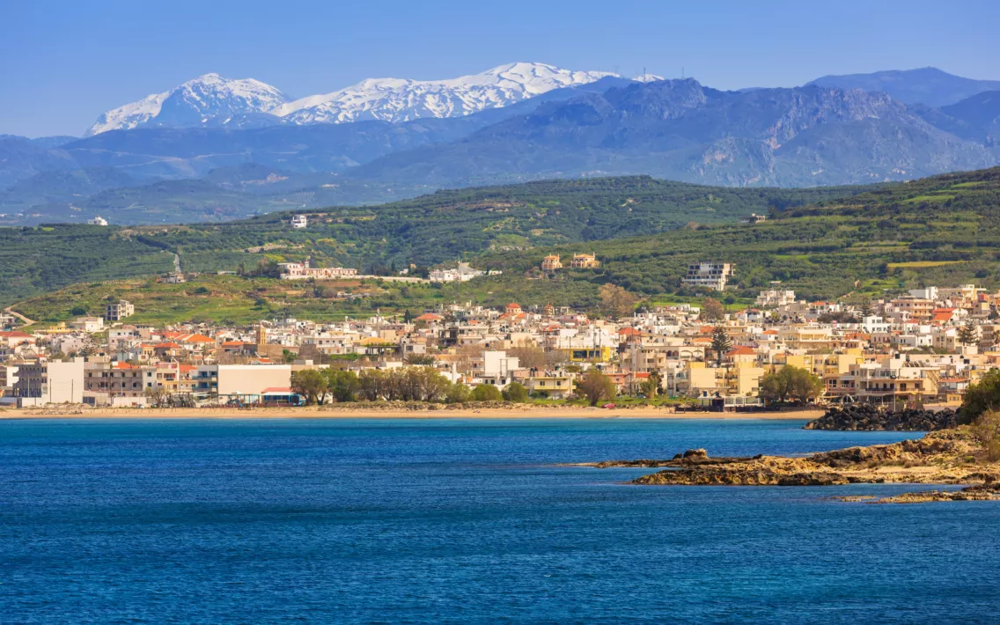
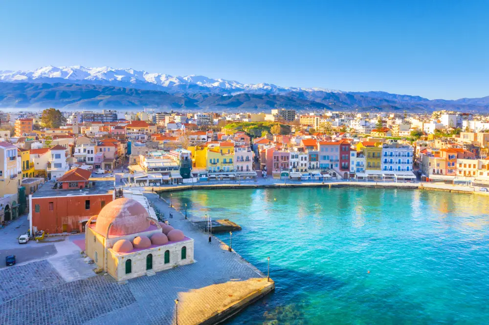
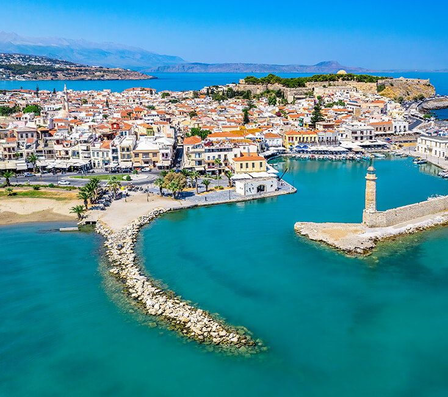
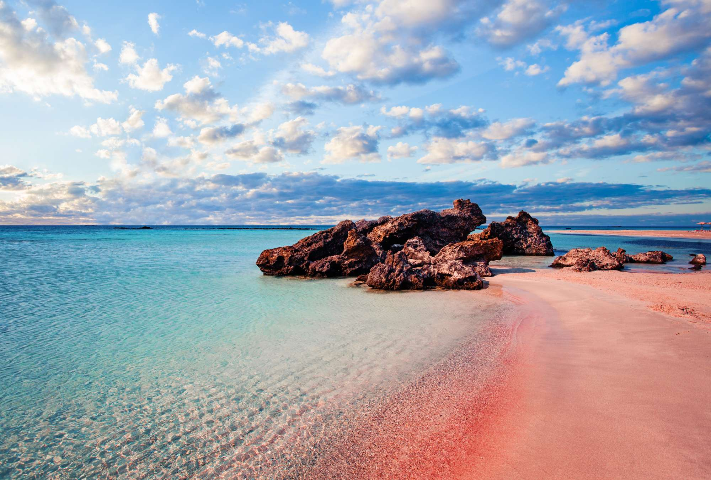
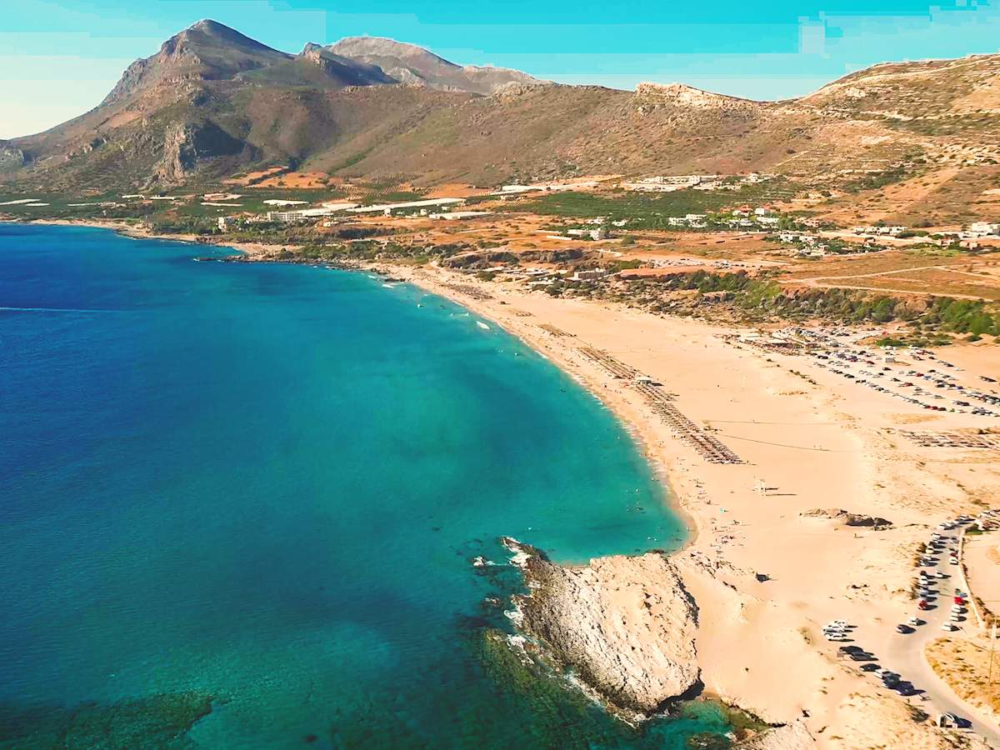

Unsere Reise
Orte, Strände, Ausflüge, Tavernen und persönliche Erinnerungen für unsere gemeinsame Zeit auf Kreta.

Kapitel 1
Willkommen auf Kreta
Kapitel öffnen →
Kapitel 2
Unser Zuhause in Sfinari
Kapitel öffnen →
Kapitel 3
Kissamos – Das Tor zum Westen Kretas
Kapitel öffnen →
Kapitel 4
Chania – Altstadt, Hafen und venezianisches Flair
Kapitel öffnen →
Kapitel 5
Rethymno – Altstadt, Fortezza und ein kurzer persönlicher Abstecher
Kapitel öffnen →
Kapitel 6
Balos – Die berühmteste Lagune Kretas
Kapitel öffnen →
Kapitel 7
Elafonisi – Der rosafarbene Traumstrand
Kapitel öffnen →
Kapitel 8
Topolia-Schlucht & Agia-Sofia-Höhle
Kapitel öffnen →
Kapitel 9
Zur kleinen Kapelle über dem Meer
Kapitel öffnen →
Kapitel 10
Falasarna – Einer der schönsten Strände Kretas
Kapitel öffnen →
Kapitel 11
Gut zu wissen – Praktische Tipps für euren Urlaub
Kapitel öffnen →
Kapitel 12